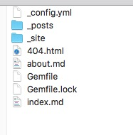

安装 Ruby 环境
-
先安装好 RVM
-
在终端控制台输入命令：
$ curl -sSL https://get.rvm.io | bash -s stable
:~ admin$ curl -sSL https://get.rvm.io | bash -s stable
Downloading https://github.com/rvm/rvm/archive/1.29.1.tar.gz
Downloading https://github.com/rvm/rvm/releases/download/1.29.1/1.29.1.tar.gz.asc
Found PGP signature at: 'https://github.com/rvm/rvm/releases/download/1.29.1/1.29.1.tar.gz.asc',
but no GPG software exists to validate it, skipping.
Installing RVM to /Users/admin/.rvm/
Adding rvm PATH line to /Users/admin/.profile /Users/admin/.mkshrc /Users/admin/.bashrc /Users/admin/.zshrc.
Adding rvm loading line to /Users/admin/.profile /Users/admin/.bash_profile /Users/admin/.zlogin.
Installation of RVM in /Users/admin/.rvm/ is almost complete:
* To start using RVM you need to run `source /Users/admin/.rvm/scripts/rvm`
in all your open shell windows, in rare cases you need to reopen all shell windows.
# admin,
#
# Thank you for using RVM!
# We sincerely hope that RVM helps to make your life easier and more enjoyable!!!
#
# ~Wayne, Michal & team.
In case of problems: https://rvm.io/help and https://twitter.com/rvm_io
AdmindeiMac-4:~ admin$ rvm -v
rvm 1.29.1 (latest) by Michal Papis, Piotr Kuczynski, Wayne E. Seguin [https://rvm.io/]
如果能显示版本号,则安装成功。 如果之前安装过 RVM 想要更新 则 $ rvm get stable
- 安装Ruby
- 列出 ruby 可安装的版本信息 (这里安装的是 2.4.0 的)
- $ rvm list known
- 安装一个ruby版本
- $ rvm install 2.4.0
AdmindeiMac-4:~ admin$ rvm list known
# MRI Rubies
[ruby-]2.2[.6]
[ruby-]2.3[.3]
[ruby-]2.4[.0]
ruby-head
# for forks use: rvm install ruby-head-<name> --url https://github.com/github/ruby.git --branch 2.2
# JRuby
jruby-1.6[.8]
jruby-1.7[.26]
jruby[-9.1.7.0]
jruby-head
# Rubinius
rbx[-3.71]
rbx-head
# Opal
opal
# Minimalistic ruby implementation - ISO 30170:2012
mruby-1[.2.0]
mruby[-head]
# Ruby Enterprise Edition
ree-1.8.6
ree[-1.8.7][-2012.02]
# Topaz
topaz
# MagLev
maglev[-head]
maglev-1.0.0
# Mac OS X Snow Leopard Or Newer
macruby-nightly
macruby-head
# IronRuby
ironruby[-1.1.3]
ironruby-head
:~ admin$ rvm install 2.4 --default
Searching for binary rubies, this might take some time.
No binary rubies available for: osx/10.12/x86_64/ruby-2.4.0.
Continuing with compilation. Please read 'rvm help mount' to get more information on binary rubies.
Checking requirements for osx.
Installing requirements for osx.
Updating system.........
Installing required packages: libyaml, readline, libksba, openssl@1.1......
Certificates in '/usr/local/etc/openssl@1.1/cert.pem' are already up to date.
Requirements installation successful.
Installing Ruby from source to: /Users/admin/.rvm/rubies/ruby-2.4.0, this may take a while depending on your cpu(s)...
ruby-2.4.0 - #downloading ruby-2.4.0, this may take a while depending on your connection...
% Total % Received % Xferd Average Speed Time Time Time Current
Dload Upload Total Spent Left Speed
100 11.9M 100 11.9M 0 0 7226k 0 0:00:01 0:00:01 --:--:-- 7222k
ruby-2.4.0 - #extracting ruby-2.4.0 to /Users/admin/.rvm/src/ruby-2.4.0....
ruby-2.4.0 - #configuring......................................................-
ruby-2.4.0 - #post-configuration.
ruby-2.4.0 - #compiling........................................................|
ruby-2.4.0 - #installing.......
ruby-2.4.0 - #making binaries executable..
ruby-2.4.0 - #downloading rubygems-2.6.10
% Total % Received % Xferd Average Speed Time Time Time Current
Dload Upload Total Spent Left Speed
100 747k 100 747k 0 0 395k 0 0:00:01 0:00:01 --:--:-- 395k
ruby-2.4.0 - #extracting rubygems-2.6.10....
ruby-2.4.0 - #removing old rubygems.........
ruby-2.4.0 - #installing rubygems-2.6.10.....................
ruby-2.4.0 - #gemset created /Users/admin/.rvm/gems/ruby-2.4.0@global
ruby-2.4.0 - #importing gemset /Users/admin/.rvm/gemsets/global.gems...........|
ruby-2.4.0 - #generating global wrappers........
ruby-2.4.0 - #gemset created /Users/admin/.rvm/gems/ruby-2.4.0
ruby-2.4.0 - #importing gemsetfile /Users/admin/.rvm/gemsets/default.gems evaluated to empty gem list
ruby-2.4.0 - #generating default wrappers........
ruby-2.4.0 - #adjusting #shebangs for (gem irb erb ri rdoc testrb rake).
Install of ruby-2.4.0 - #complete
Ruby was built without documentation, to build it run: rvm docs generate-ri
AdmindeiMac-4:~ admin$ ruby -v
ruby 2.4.0p0 (2016-12-24 revision 57164) [x86_64-darwin16]
出现版本号表示安装成功。
安装Jekyll
执行下面的语句安装
AdmindeiMac-4:~ admin$ gem install jekyll
Fetching colorator-1.1.0.gem
Fetching addressable-2.6.0.gem
Fetching public_suffix-3.0.3.gem
Fetching http_parser.rb-0.6.0.gem
Fetching eventmachine-1.2.7.gem
......
Parsing documentation for pathutil-0.16.2
Installing ri documentation for pathutil-0.16.2
Parsing documentation for rouge-3.3.0
Installing ri documentation for rouge-3.3.0
Parsing documentation for safe_yaml-1.0.4
Installing ri documentation for safe_yaml-1.0.4
Parsing documentation for jekyll-3.8.5
Installing ri documentation for jekyll-3.8.5
Done installing documentation for public_suffix, addressable, colorator, http_parser.rb, eventmachine, em-websocket, concurrent-ruby, i18n, rb-fsevent, ffi, rb-inotify, sass-listen, sass, jekyll-sass-converter, ruby_dep, listen, jekyll-watch, kramdown, liquid, mercenary, forwardable-extended, pathutil, rouge, safe_yaml, jekyll after 64 seconds
25 gems installed
至此jekyll就已经安装完毕了，后续就是个性化的自己设定了。
创建博客
新建一个工作区jekyllWorkspace
cd到jekyllWorkspace
执行jekyll new name创建新的工作区
AdmindeiMac-4:~ admin$ jekyll new pblog
Running bundle install in /Users/admin/Downloads/TestCode/r/pblog...
Bundler: The dependency tzinfo-data (>= 0) will be unused by any of the platforms Bundler is installing for. Bundler is installing for ruby but the dependency is only for x86-mingw32, x86-mswin32, x64-mingw32, java. To add those platforms to the bundle, run `bundle lock --add-platform x86-mingw32 x86-mswin32 x64-mingw32 java`.
Bundler: Fetching gem metadata from https://rubygems.org/...........
Bundler: Fetching gem metadata from https://rubygems.org/.
......
Bundler: Fetching minima 2.5.0
Bundler: Installing minima 2.5.0
Bundler: Bundle complete! 4 Gemfile dependencies, 29 gems now installed.
Bundler: Use `bundle info [gemname]` to see where a bundled gem is installed.
New jekyll site installed in /Users/admin/Downloads/TestCode/r/pblog.
文件结构如下：

假如当前的jekyll环境不支持config.yml中设置的theme或者plugins值时， 需要通过下面的命令进行对应theme或者plugins的配置，然后再开启服务 (config.yml中theme的值每次只能设置一个， plugins可以是多个，Gemfile文件中plugins的值也有做对应修改)
AdmindeiMac-4:~ admin$ bundle install
The dependency tzinfo-data (>= 0) will be unused by any of the platforms Bundler is installing for. Bundler is installing for ruby but the dependency is only for x86-mingw32, x86-mswin32, x64-mingw32, java. To add those platforms to the bundle, run `bundle lock --add-platform x86-mingw32 x86-mswin32 x64-mingw32 java`.
Fetching gem metadata from https://rubygems.org/...........
Fetching gem metadata from https://rubygems.org/.
Resolving dependencies...
Using public_suffix 3.0.3
Using addressable 2.6.0
......
Using safe_yaml 1.0.4
Using jekyll 3.8.5
Using jekyll-feed 0.11.0
Using jekyll-seo-tag 2.5.0
Fetching jekyll-theme-slate 0.1.1
Installing jekyll-theme-slate 0.1.1
Using minima 2.5.0
Bundle complete! 5 Gemfile dependencies, 30 gems now installed.
Use `bundle info [gemname]` to see where a bundled gem is installed.
- bundle install命名必须在前面创建的工作区目录下执行
- jekyll serve命令必须在blog对应的目录（含config.yml的那一级）下执行
cd到博客文件夹，开启服务器
AdmindeiMac-4:~ admin$ jekyll serve
Configuration file: /Users/admin/Downloads/TestCode/r/pblog/_config.yml
Source: /Users/admin/Downloads/TestCode/r/pblog
Destination: /Users/admin/Downloads/TestCode/r/pblog/_site
Incremental build: disabled. Enable with --incremental
Generating...
Jekyll Feed: Generating feed for posts
done in 0.459 seconds.
Auto-regeneration: enabled for '/Users/admin/Downloads/TestCode/r/pblog'
Server address: http://127.0.0.1:4000
Server running... press ctrl-c to stop.
访问 http://localhost:4000/

其他
- jekyll中文网 http://jekyllcn.com
- jekyll英文网 http://jekyllrb.com
- Markdown 语法 (中文版) http://wowubuntu.com/markdown/
- 搭建完博客后，用
github Pages或者码云等托管就可以看到了。